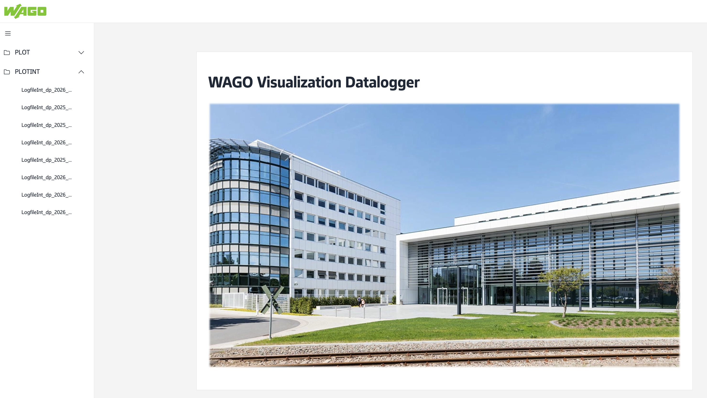
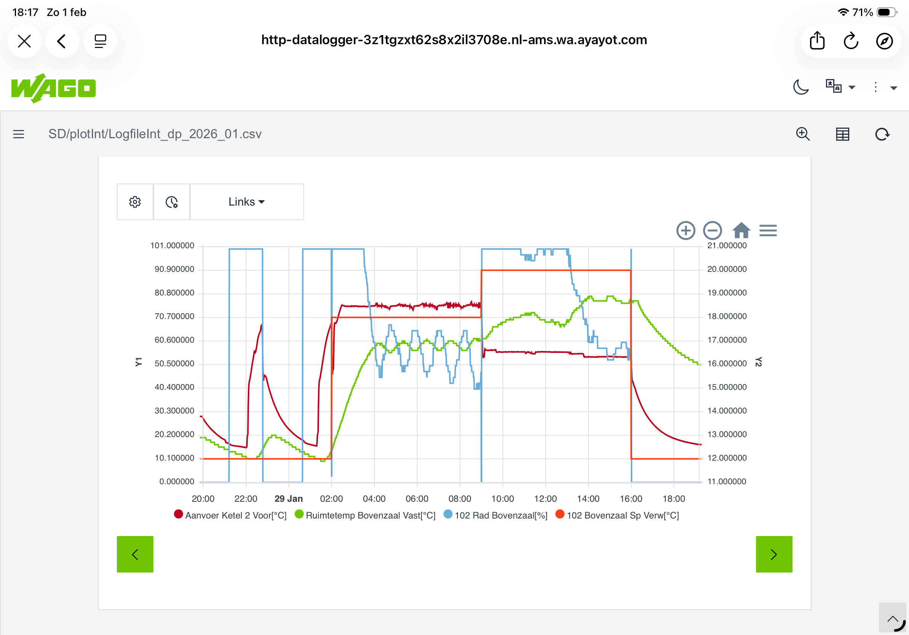

De dataplotter slaat continu meetwaarden op en maakt deze zichtbaar als grafieken. Dit is het belangrijkste diagnosegereedschap voor het analyseren van regelingsproblemen, het beoordelen van opwarmgedrag en het optimaliseren van instellingen.
Twee datalogging systemen
De installatie heeft twee onafhankelijke loggers die parallel draaien:
| Logger | Interval | Bestandsnaam | Periode per bestand | Gebruik |
|---|---|---|---|---|
| Dataplotter 1 | Elke 5 minuten | Logfile.csv | Per dag | Langetermijn trends, dagelijkse patronen |
| WebDataPlotter 1 | Elke 1 minuut | LogfileInt.csv | Per maand | Gedetailleerde analyse, regelingsproblemen |
Bestanden worden opgeslagen op de SD kaart van de PLC. Oude bestanden worden automatisch verwijderd na 400 dagen.
WebDataPlotter gebruiken

📷 screenshots/webdataplotter.png — nog toe te voegenDe WebDataPlotter is een aparte webinterface die direct op de PLC draait. Je opent hem via het portaal menu WebDataPlotter. Links zie je twee mappen:
- PLOT — dagbestanden van de 5-minuten logger
- PLOTINT — maandbestanden van de 1-minuten logger (meest gebruikt voor diagnose)
- Ga naar WebDataPlotter in het portaalmenu
- Klik links op PLOTINT om de maandbestanden te zien
- Klik op het gewenste maandbestand (bijv. LogfileInt_dp_2026_05.csv voor mei 2026)
- Klik op het instellingen icoon (tandwiel) om kanalen te selecteren
- Selecteer de gewenste kanalen — combineer bijv. ruimtetemperatuur, aanvoertemperatuur en klepstand
- Klik op Apply om de grafiek te tonen
- Gebruik zoom in (+) om een specifieke periode te bekijken
Beschikbare kanalen
De logger registreert 32 kanalen. De meest relevante voor diagnose:
| Kanaal | Eenheid | Gebruik |
|---|---|---|
| Buitentemperatuur | °C | Correlatie met ketelgedrag en stookgrens |
| Aanvoer Ketel 1/2/3/4 | °C | Ketelbelasting en temperatuurverloop |
| Ruimtetemp [ruimtenaam] | °C | Opwarmverloop en comfortbeoordeling |
| SP Ketel 1/2/3/4 | % | Ketelstuuringssignaal (0=uit, 100=vol vermogen) |
| Rad [ruimtenaam] | % | Radiatorklepstand per ruimte (0=dicht, 100=open) |
| CV Druk Ketel [nr] | bar | Waterdruk bewaking |
Diagnose voorbeeld: Bovenzaal opwarmprobleem
Dit is een reëel voorbeeld van een regelingsprobleem dat is geïdentificeerd via de dataplotter op 29 januari 2026.

📷 screenshots/dataplotter_bovenzaal.png — nog toe te voegenTijdlijnanalyse — wat er gebeurde
Conclusie en actie
De optimizer heeft geleerd dat 7 uur voorverwarming nodig is, terwijl 2 uur in de praktijk voldoende bleek. Dit probleem staat geregistreerd als verbeterpunt #004.
Gewenste aanpassing in CV configuratie (admin vereist): maximale aanwarmtijd terugbrengen van 04:00:00 naar 02:30:00, en de optimizer resetten zodat hij opnieuw leert. Zie CV Ketels — configuratie voor de betreffende parameters.
Handige diagnose combinaties
| Vraag | Combineer deze kanalen |
|---|---|
| Wordt de ruimte op tijd op temperatuur gebracht? | Ruimtetemperatuur + Setpoint ruimte |
| Wat doet de ketel tijdens opwarmen? | Aanvoer ketel + Radiatorklepstand + Ruimtetemperatuur |
| Is de stookgrens de oorzaak van geen verwarming? | Buitentemperatuur + Aanvoer ketel + Radiatorklepstand |
| Is er een waterdrukprobleem? | CV druk ketel [nr] over meerdere dagen |
| Hoeveel energie wordt verspild? | Aanvoer ketel + SP ketel (belasting) + Radiatorklepstand |